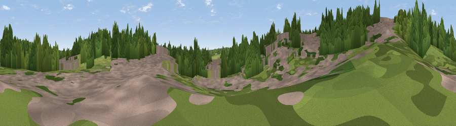

Viewpoint near Chipping Barnet
#45983 in England · top 83% of its area beats it · near Chipping BarnetThe view, rendered

A 360° render of this exact spot computed from the terrain model, tree cover and land cover — summer colours, afternoon light, calibrated against photographs of famous viewpoints. Real trees, hedges and buildings will differ in detail.
The panorama
Grey silhouette: terrain skyline in each direction (720 bearings, Earth curvature and refraction included). Dashed green: skyline with trees (+15 m) and buildings (+8 m) as obstacles. Blue strip: how far the ground is visible on each bearing.
Where the view opens
Wedge length = distance to the farthest visible ground on that bearing (vegetation-aware). Rings at 10, 25 and 50 km.
What fills the view
54% woodland · 32% built-up · 13% grassland
Angular shares of the visible panorama (visual magnitude), not map area. Landscape diversity 0.42 (0–1 Shannon).
Key numbers
More beautiful places nearby
The staircase of upgrades: each row has a higher view potential than everything closer. Driving times are estimates from straight-line distance, calibrated against real road routing — check an actual route before setting out.
| Place | Direction | Drive | Score |
|---|---|---|---|
| Viewpoint near Chipping Barnet | ENE · 0 km | ~1 min | 25.6 |
| Highwood Hill | WSW · 4 km | ~9 min | 46.3 |
| Viewpoint near Wood Green | SE · 8 km | ~15 min | 51.8 |
| Harrow on the Hill | SW · 13 km | ~24 min | 60.7 |
| Viewpoint near Whipsnade | NW · 34 km | ~52 min | 65.1 |
| Viewpoint near Church End | NW · 35 km | ~53 min | 65.8 |
| Viewpoint near Tring Station | WNW · 35 km | ~53 min | 68.5 |
| Beacon Hill | NW · 36 km | ~54 min | 74.1 |
51.64928, -0.19345 · source: osm viewpoint · position refined by local search. Computed location — check access rights before visiting.